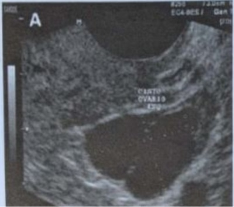
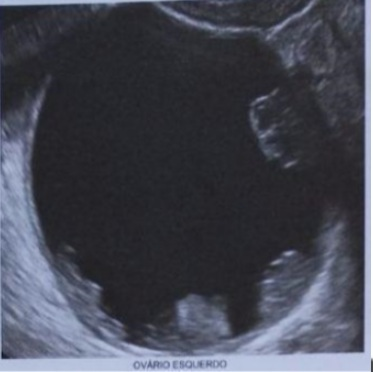
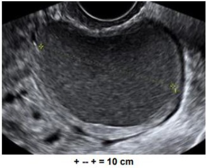
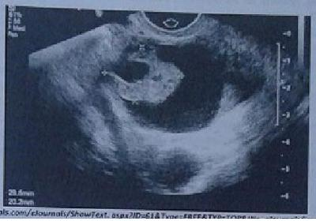
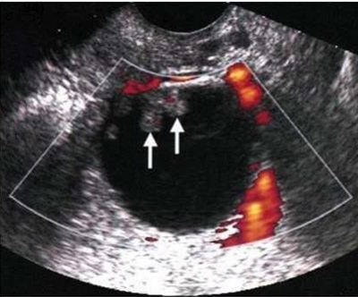

Questão 1 · Fatores de risco · 4000128425Quanto ao Câncer de Ovário e seus fatores de risco, é CORRETO firmar que:
A A incidência de câncer de ovário aumenta com a idade e é mais prevalente entre a quarta e a quinta década de vida.
B A nuliparidade e idade materna acima de 35 anos não se associam a risco aumentado para câncer de ovário.
C A terapia hormonal em mulheres climatéricas e a doença inflamatória pélvica não aumentam o risco para câncer de ovário.
D Os principais fatores de proteção para câncer de ovário são os contraceptivos orais, a gravidez, a amamentação e a ligadura de trompas.
E A obesidade parece estar associada aos tipos mais agressivos de câncer de ovário.
Questão 2 · Diagnóstico · 4000117294Mulher, 44 anos, comparece assustada à consulta ginecológica com exame de imagem com massa anexial esquerda de 4 cm. Refere dor leve há dois dias e ciclos menstruais irregulares há 1 ano, já cou até 3 meses em amenorreia. Assinale a alternativa que indica corretamente qual conduta inicial para o caso apresentado.
A acalmar a paciente de que se trata de doença benigna
B solicitar hemograma e proteína c reativa para excluir abscesso
C solicitar ressonância magnética para avaliar se critérios de malignidade
D indicar laparoscopia para ooforoplastia
E solicitar beta hcg para excluir prenhez ectópica
Questão 3 · Câncer de ovário · 4000115024Todas as afirmações são corretas, em relação às neoplasias malignas de ovário, EXCETO:
A Existe associação com endometriose para carcinomas de células claras e endometrioide.
B Estão associadas às mutações no gene BRCA1 (Breast Cancer 1, early on set).
C A salpingectomia bilateral em mulheres jovens se associa à redução do risco relativo.
D O CA-125 e CA 19-9, juntamente com ultrassonografia transvaginal, são métodos de rastreio.
Questão 4 · Tumores ovarianos benignos · 4000108983Paciente de 23 anos, vida sexual com uso de preservativo, ciclos menstruais regulares. Realiza exame ginecológico com achado de tumoração anexial direita, móvel e indolor. Exame ultrassonográ co complementar identi ca tumoração ovariana de 6 cm compatível com diagnóstico de teratoma. A ooforoplastia direita prevenirá qual das seguintes explicações?
A Degeneração malígna.
B Sangramento.
C Infertilidade.
D Torção.
Revisar: possível letra faltando em enunciado
Questão 5 · Diagnóstico · 4000108060Mulher com 35 anos apresenta diagnóstico de tumor de ovário. Qual são as características que poderão levar o ginecologista ter maior tranquilidade de que se trata de um caso benigno?
A Apresenta vegetações somente intracísticas.
B Bilateralidade.
C Vascularização escassa.
D Tumor pequeno, sólido e irregular.
E Áreas císticas intercaladas com áreas sólidas.
Questão 6 · Diagnóstico · 4000103309São critérios da IOTA (International Ovarian Tumor Analysis), para se suspeitar massa ovariana como maligna:
A multilocular com diâmetros acima de 100 mm.
B presença de sombra acústica posterior.
C ausência de fluxo ao doppler.
D componente sólido menor que 7 mm.
Questão 7 · Fatores de risco · 4000089298Um fator de risco para o carcinoma epitelial de ovário é:
A Nuliparidade.
B Uso de pílula.
C Menarca tardia.
D Menopausa precoce.
Questão 8 · Classif icação histológica · 4000076193O câncer de ovário não tem uma prevalência alta, mas é o mais letal dos cânceres ginecológicos. A maioria dos tumores malignos ovarianos é diagnosticada em estágio avançado. Pode-se afirmar, sobre os tumores ovarianos malignos, que:
A carcinomas serosos são os mais frequentes com 30 a 70% dos casos
B tumores de células claras são derivados de células germinativas
C teratomas malignos são tumores estromais de cordão sexual
D tumores endometrióides são de linhagem germinativa
Questão 9 · Tumores anexiais e câncer de ovário · 4000073269Menina de 8 anos apresenta quadro de dor em baixo ventre. A ultrassonogra a revela tumor de origem ovariana medindo 8cm. Qual o tipo histológico mais provável neste caso?
A Tumor de Brenner.
B Cisto folicular.
C Cistoadenoma mucinoso.
D Adenocarcinoma papilífero.
E Disgerminoma.
Questão 10 · Etiopatogenia · 4000052336Sobre o câncer de ovário, é CORRETO afirmar:
A Quando associado ao tumor de cólon pode ter alterações nos genes MLH1 e MSH2.
B A principal via de disseminação é por continuidade.
C O tabagismo aumenta o risco para o tipo histológico seroso papilífero.
D O tamanho do tumor é critério para o estadiamento.
E O tipo histológico de células claras é tumor radiossensível.
Questão 11 · Tumores ovarianos benignos · Struma ovarii · 4000037721O tumor de ovário com ação hormonal tireoidiana é
A Adenocarcinoma seroso.
B Adenocarcinoma mucinoso.
C Sarcoma.
D Struma Ovari.
E Tumor do seio endodérmico.
Questão 12 · Estadiamento · 4000032783Mulher de 73 anos, nuligesta, comparece à consulta, com queixa de dor abdominal moderada e dor para evacuar. Informa que perdeu 10 quilos de peso nos últimos seis meses e está se sentindo mais fraca. Ultrassonogra a transvaginal realizada há um mês evidenciou massa heterogênea volumosa, de provável topogra a anexial direita, com presença de septos grosseiros e cápsula irregular; além de quantidade significativa de líquido livre na pelve. Ao exame físico, palpa-se massa até altura da cicatriz umbilical, fixa e dolorosa. Apresenta edema depressível e indolor em membros inferiores. A conduta MAIS ADEQUADA é:
A realizar laparotomia em hospital terciário se estiver clinicamente estável.
B realizar biópsia percutânea da lesão guiada por ultrassonografia.
C solicitar dosagem sérica de estradiol.
D solicitar ressonância magnética da pelve.
Questão 13 · Estadiamento · 4000032294Paciente com 51 anos de idade, G2P2A0, submetida à laparotomia por tumoração pélvica em ovários direito e esquerdo ao ultrassom e CA-125 elevado. No ato cirúrgico, constatou-se que a tumoração era limitada ao ovário esquerdo e que o exame anatomopatológico de congelação (transoperatório) apresentou resultado positivo para malignidade. Com base nessas informações, assinale a alternativa que indica a melhor conduta cirúrgica para o caso hipotético apresentado.
A Coleta de líquido ascítico ou lavado peritonial, histerectomia total, salpingo- oforectomia esquerda, exame cuidadoso de toda a superfície peritonial, omentectomia, biópsia de linfonodos para-aórticos e biópsias aleatórias de áreas não envolvidas, mas suspeitas.
B Coleta de líquido ascítico ou lavado peritonial, histerectomia total, salpingo- oforectomia bilateral, exame cuidadoso de toda a superfície peritonial, omentectomia, biópsia de linfonodos para-aórticos e biópsias aleatórias de áreas não envolvidas, mas suspeitas.
C Coleta de líquido ascítico ou lavado peritonial, histerectomia total, salpingo- oforectomia bilateral, exame cuidadoso de toda a superfície peritonial, biópsia de linfonodos para-aórticos e biópsias aleatórias de áreas não envolvidas, mas suspeitas.
D Coleta de líquido ascítico ou lavado peritonial, histerectomia total, salpingo- oforectomia esquerda, exame cuidadoso de toda a superfície peritonial, biópsia de linfonodos para-aórticos e biópsias aleatórias de áreas não envolvidas, mas suspeitas. ida oib pr ed
Questão 14 · Fatores de risco · 4000020073O câncer de ovário geralmente não tem sintomas nos estágios iniciais. Devido a isso é importante o conhecimento dos fatores de risco associados, são eles, EXCETO:
A obesidade.
B história de câncer de ovário em familiar de 1º grau.
C nuliparidade.
D infertilidade.
E contraceptivos orais.
Questão 15 · Diagnóstico · Tratamento · 4000007421Gestante de 8 semanas realizou ultrassonogra a obstétrica inicial que evidenciou massa anexial cística complexa, de provável origem ovariana. A imagem possuía diâmetro de 7 cm, cápsula na e presença de nodulação intracística ecogênica sem fluxo ao estudo Doppler. A dosagem de Ca125 = 263 U/mL. A primeira hipótese diagnóstica e conduta são
A Cistoadenoma seroso de ovário - dosagem seriada de Ca125 para definir conduta cirúrgica.
B Cistoadenocarcinoma de ovário - laparotomia exploradora para anexectomia.
C Disgerminoma de ovário - laparotomia exploradora de anexectomia.
D Tumor borderline de ovário - laparotomia exploradora, ressecção do cisto, preservação do ovário.
E Cisco teca-luteínico hemorrágico - nova ultrassonografia com 11 semanas.
Questão 16 · Tumores anexiais e câncer de ovário · 4000123171Mulher, 35 anos, assintomática, deseja gestar, refere que realizou um exame ultrassonográ co com imagem anexial direita cística com componente sólido de 10 cm de diâmetro, com aumento da vascularização no componente sólido de 4cm e na septação grosseira. As dosagens de marcadores alfafetoproteína, CA 125 e Antígeno carcinoembrionário (CEA) estão normais. Qual melhor conduta diante desse caso?
A Ooforoplastia laparoscópica.
B Repetição da ultrassonografia em 6 meses.
C Tranquilizar a paciente pois se trata de uma massa de aspecto benigno.
D Salpingooforectomia bilateral com histerectomia e linfadenectomia laparotômica com estadiamento para câncer de ovário.
E Salpingooforectomia unilateral laparoscópica com congelação.
Revisar: possível letra faltando em enunciado
Questão 17 · Tratamento · 4000113342Paciente de 66 anos relata perda de 12 kg nos últimos 4 meses. Queixa-se ainda de pepsia e aumento do volume abdominal. A tomogra a computadorizada de abdome revelou ascite e massa complexa em anexo esquerdo de 15 cm de diâmetro. O diagnóstico inicial foi adenocarcinoma de ovário. Nesse caso, a terapia usual envolve
A cirurgia + radioterapia.
B cirurgia + quimioterapia.
C radioterapia, apenas.
D cirurgia, apenas.
E cirurgia + quimioterapia + radioterapia.
Questão 18 · Tumores anexiais e câncer de ovário · 4000106451Mulher 62 anos, G1P0A1, menopausa há 12 anos, é submetida à ultrassonogra a transvaginal por ter apresentado episódio de dor em hipogástrio. Durante o exame, observa-se lesão cística em projeção de anexo esquerdo,medindo 4 cm no maior diâmetro, com um septo no interior de espessura igual a 3 mm. Não se identi ca uxo sanguíneo durante avaliação dopplervelocimétrica. Dosagem de CA-125 igual a 32 U/mL. Assinale a melhor alternativa terapêutica.

A Salpingooforectomia bilateral.
B Ooforoplastia e exérese da lesão íntegra
C Histerectomia total e salpingooforectomia bilateral
D Repetir a ultrassonografia em 3 meses
Revisar: possível letra faltando em enunciado
Questão 19 · Tumores ovarianos benignos · 4000105907Paciente de 23 anos de idade submeteu-se a laparotomia por tumor heterogêneo de ovário esquerdo, de 5 cm de diâmetro. Realizou-se ooforoplastia e o tumor foi retirado íntegro. O ovário direito, as tubas e o útero encontravam-se normais. Como não havia disponibilidade de congelação intraoperatória, o cirurgião optou por abrir e inspecionar a peça. Observou formação cística, de conteúdo denso com aspecto gorduroso, e alguns septos. Com esse achado, a suspeita é de:
A Cistoadenoma mucinoso.
B Corpo lúteo hemorrágico.
C Tumor da granulosa.
D Cisto dermóide.
E Disgerminoma.
Questão 20 · Câncer de ovário · 4000101861Mulher de 53 anos com derrame pleural e ascite compatíveis, respectivamente, com exsudato e transudato. Ultrassonogra a pélvica: imagem sólida no ovário esquerdo, hipoecoica, homogênea e medindo aproximadamente 3,0 x 3,0 x 2,0 cm. A hipótese diagnóstica para a lesão ovariana é
A Tumor de Brenner, constituído por epitélio transicional, entidade epidemiologicamente mais comum nesse contexto clínico-radiológico.
B Tumor de Krukenberg, constituído por células em anel de sinete, frequentemente associado com essas manifestações.
C Fibroma, tumor derivado do cordão sexual, de bom prognóstico e o mais comumente associado ao quadro clínico da paciente.
D Tecoma, derivado do cordão sexual, em geral sem atividade hormonal, cujo tratamento cirúrgico melhora a sintomatologia extraovariana.
Questão 21 · Tumores ovarianos benignos · 4000100342Paciente de 45 anos com Ultrassom mostrando cisto com conteúdo espesso no ovário esquerdo. Foi submetida à Ooforectomia e o exame de congelação diagnosticou um Cistoadenoma Mucinoso. Houve ruptura do mesmo no ato operatório. De acordo com este enunciado, qual das abaixo está correta?
A A Ooforoplastia teria sido a melhor opção cirúrgica
B A paciente corre o risco de desenvolver um pseudomixoma
C O cisto era benigno e a paciente está tratada
D Por se tratar de um cisto maligno deverá ser submetida à cirurgia radical (Pan Histerectomia)
Questão 22 · Estadiamento · 4000099081Com relação ao estadiamento do câncer de ovário, assinale a incorreta.
A Estádio Ia – Tumor limitado a um ovário, cápsulabintacta, sem tumor na superfície externa.
B Estádio Ic – Tumor de ovário nos Estádio Ia ou Ib mas com tumor na superficie ou cápsula rota de um ou ambos os ovários; ou com ascite ou lavado peritoneal com células neoplásicas presentes.
C Estádio IIa – Extensão e/ou metástases para o útero e/ou trompa.
D Estádio IIIb – Tumor em um ou ambos ovários com confirmação histológica de implante peritoneal e este não excedendo 2 cm de diâmetro. Linfonodos positivos.
E Estádio IV Tumor com metástases à distância Havendo derrame pleural deve ser pesquisada presença de células neoplásicas. Metástases parenquimatosas hepáticas correspondem ao Estádio IV.
Questão 23 · Tumores ovarianos benignos · 4000099065Mulher de 55 anos apresenta derrame pleural e ascite. Ao exame ultrassonográ co apresenta imagem sólida no ovário esquerdo, hipoecóica, homogênea e medindo aproximadamente 3,0 x 3,0 x 2,0 cm. A hipótese diagnóstica para a lesão ovariana é:
A Tecoma.
B Fibroma.
C tumor de Brenner.
D tumor de Krukenberg.
E Cistoadenoma mucinoso.
Revisar: possível letra faltando em enunciado
Questão 24 · Diagnóstico · Tumores ovarianos benignos · 4000095784Paciente de 37 anos apresenta ultrassonogra a transvaginal demonstrando massa anexial cística de pequeno volume e sem neovascularização ao estudo Doppler. Esse quadro sugere:
A Cisto folicular ovariano.
B Prenhez ectópica.
C Tumor maligno de ovário.
D Abscesso tubo ovariano.
E Nenhuma das respostas acima.
Questão 25 · Rastreamento e prevenção · 4000078894Sobre o rastreamento de câncer de ovário, é correto afirmar, EXCETO:
A Atualmente, o exame pélvico anual é a principal ferramenta preventiva para essas mulheres.
B Não se recomenda rastreamento rotineiro, com dosagem de antígeno do câncer 125 (CA-125) de mulheres assintomáticas e baixo risco para câncer de ovário.
C Recomenda-se rastreamento rotineiro, com ultrassonografia, de mulheres assintomáticas e baixo risco para câncer de ovário.
D Para as mulheres que apresentam mutações no gene BRCA1 e BRCA2 e recusam a ooforectomia profilática, essas duas ferramentas acima de rastreamento podem ser utilizadas.
E Aquelas com histórico familiar significativo de câncer de ovário e de mama também podem ser consideradas de alto risco com indicação para rastreamento.
Questão 26 · Tumores metastáticos · 4000068623Paciente após exérese de tumor ovariano teve como diagnóstico tumor de Krukenberg. Sabendo se tratar de um tumor metastático, seu ginecologista deve encaminhá-la ao:
A Gastroenterologista.
B Pneumologista.
C Neurologista.
D Endocrinologista.
Questão 27 · Tumores de céulas germinativas · 4000053688Em relação ao tumor ovariano de células germinativas maligno, qual é o tipo mais frequente em crianças e adolescentes?
A Disgerminoma
B Cistoadenocarcinomamucinoso
C Tumor de seio endodérmico
D Teratoma imaturo
Questão 28 · Diagnóstico · Tratamento · 4000047682M.D.S, 33 anos, casada. Nulípara. Última menstruação há 25 dias, ciclos regulares. Refere uso de preservativo em todas as relações. Paciente procura atendimento ambulatorial com dor em fossa ilíaca esquerda, de leve intensidade, com início há 10 dias, sem irradiação. Nega febre, queixas urinárias ou gastrointestinais. Sem outras queixas. Ao exame: BEG, corada, hidratada. PA 110 x 70 mmHg. Abdome: ácido, doloroso à palpação profunda de fossa ilíaca esquerda, sem sinais de irritação peritoneal. Exame ginecológico: dor à palpação de anexo esquerdo. Sem outras particularidades. Trouxe beta hCG negativo e o seguinte resultado da ecogra a: - Útero AVF, 55 cm3, textura homogênea, - Endométrio 11 mm, - Ovário direito de morfologia e tamanho normais, Ovário esquerdo com imagem cística anecóica, unilocular, contorno regular e paredes finas, medindo 40x32mm, - Fundo de saco posterior livre. Assinale a alternativo com o provável diagnóstico e tratamento:
A Teratoma cístico, acompanhamento ambulatorial.
B Endometrioma, tratamento cirúrgico.
C Teratoma cístico, tratamento cirúrgico.
D Cisto folicular, tratamento cirúrgico.
E Cisto folicular, acompanhamento ambulatorial.
Questão 29 · Tumores de céulas germinativas · 4000042799Menina de 5 anos de idade queixa-se de dor pélvica e ao exame físico nota-se massa móvel, dolorosa, localizada em fossa ilíaca direita, sendo que ao USG realizado evidenciou massa ovariana cística hipoecoica de 7 cm de diâmetro. O tipo histológico provável será:
A Cisto folicular
B Cistoadenoma seroso
C Disgerminoma
D Tumor de Brenner
Questão 30 · Seguimento · Tumores epiteliais · 4000028795O câncer de ovário é responsável por grande parte da mortalidade relacionada às doenças malignas na mulher, sendo o que apresenta maior letalidade. Sobre este patologia, qual alternativa correta:
A Os tumores de linhagem epitelial são os mais comuns, tendo como principal marcador sanguíneo o CA-125.
B O diagnóstico geralmente é feito nas formas iniciais, mesmo assim há grande chance de matástases, o que justifica a alta letalidade.
C O rastreio para câncer de ovário deve ser realizado após 50 anos de idade com ultrassonografia transvaginal anual para população de risco habitual.
D O tratamento padrão envolve apenas ooforectomia com salpingectomia, sendo preservado o útero.
E O uso de anticoncepcionais orais combinados é fator de risco para desenvolvimento do câncer de ovário.
Questão 31 · Seguimento · Tumores epiteliais · 4000027181Embora não sejam fudamentais para diagnóstico dos tumores ovarianos, os marcadores tumorais são de grande valia no seguimento desses tumores. Em relação ao tipo histopatológico e aos marcadores tumorais, tem-se que:
A O CA-125 é marcador de tumores epiteliais.
B CEA é marcador do disgerminormas.
C A alfafetoproteína é marcadora dos tumores do seio endodérmico.
D Os esteroides sexsuais são marcadores dos tumores embrionários.
Questão 32 · Estadiamento · 4000020024Mulher, 38 anos, assintomática, nuligesta, com desejo reprodutivo, traz à consulta um exame ultrassonográ co com imagem de massa cística e sólida em anexo direito de 10 cm de diâmetro, com aumento da vascularização no componente sólido de 5 cm e na septação de 2 cm. As dosagens de marcadores são: Alfa-Fetoproteína (AFP) = 8 g/L); CA 125 = 46,8 U/ml (VR = até 35 U/ml); CA 19.9 = 5,2 U/ml (VR = até 37 U/ml); antígeno carcinoembrionário (CEA) = μ 0,8 μg/L (VR = até 3,0 μg/L). Legenda: VR = Valor de Referência. Qual melhor conduta diante desse caso?
A Ooforoplastia laparoscópica sem necessidade de congelação, devido à idade e ao baixo risco de malignidade.
B Salpingooforectomia bilateral com histerectomia e linfadenectomia laparotômica com estadiamento para câncer de ovário.
C Salpingooforectomia unilateral laparoscópica com congelação, prosseguindo com linfadenectomia, histerectomia e anexectomia contralateral se malignidade.
D Repetição da ultrassonografia em 6 meses, pois as caraterísticas de malignidade são baixas de acordo com os critérios de IOTA (International Ovarian Tumor Analysis).
Revisar: possível letra faltando em enunciado
Questão 33 · Tumores ovarianos benignos · 4000019847Os cistos ovarianos funcionais incluem cistos foliculares, cistos do corpo lúteo e cistos tecaluteínicos. Em relação aos cistos ovarianos foliculares, analise as assertivas abaixo e assinale a alternativa correta: I - São cistos benignos. II - São os mais comuns dos cistos funcionais. III - É mais comum em mulheres menopausadas. IV - Na maioria das vezes necessitam de tratamento cirúrgico.
A Está correta apenas a assertiva I.
B Estão corretas as assertivas I e II.
C Estão corretas as assertivas III e IV.
D Estão corretas as assertivas I, II e III.
Questão 34 · Classif icação histológica · 4000017045O que caracteriza um tumor “Boderline” de ovário:
A Alta agressividade.
B Infiltração até 3mm no estroma.
C Linhagem mulleriano do tumor.
D Não há invasão do estroma.
Questão 35 · Tumores ovarianos benignos · 4000011522Assinale a alternativa que afirma corretamente características frequentes de tumores ovarianos benignos.
A Cisto multilocular, parede lisa, bordas irregulares.
B Parede lisa, componentes sólidos, cisto multilocular.
C Parede lisa, ausência de ascite, sem septos internos.
D Cisto unilocular, presença de componentes sólidos, sem septos internos.
E Bordas irregulares, presença de ascite, espessamento na parede do tumor.
Questão 36 · Tumores epiteliais · 4000006123O principal marcador sérico para tumores epiteliais ovarianos é:
A CEA.
B CA 125.
C CA 24-4.
D Bhcg.
Questão 37 · Câncer de ovário · 4000127555Paciente do sexo feminino de 40 anos de idade, IIG IIPc, foi submetida a anexectomia direita de urgência e encontrou-se o achado incidental de tumor ovariano borderline (baixo potencial maligno) no anatomopatológico. A conduta oncológica complementar adequada:
A Se prole constituída, ooforectomia contralateral e linfadenectomia laparoscópica e quimioterapia.
B Se desejosa de nova gestação, dosagem seriada de marcadores tumorais CA 125 e CEA bimensais no primeiro ano de seguimento.
C Se prole constituída, histerectomia total abdominal; salpingectomia bilateral;ooforectomia contralateral, omentectomia, linfadenectomia e quimioterapia.
D Se desejosa de nova gestação, linfadenectomia e quimioterapia.
E Se prole constituída, histerectomia total abdominal; salpingectomia bilateral; ooforectomia contralateral.
Questão 38 · Cirurgia de estadiamento · 4000124463Paciente pós-menopáusica foi submetida à laparotomia exploradora por lesão ovariana unilateral com características ultrassonográficas sugestivas de malignidade. Os exames pré-operatórios indicaram CA 125 de 56 UI/ml (normal ≤ 35 UI/ml), raio X de tórax sem alterações e tomogra a computadorizada de abdome total sem achados de extensão de doença além do ovário. O exame transoperatório de congelação revelou tratar-se de um adenocarcinoma seroso no ovário esquerdo. Os achados cirúrgicos descritos evidenciaram tumor restrito ao ovário esquerdo, ovário direito sem alterações e ausência de doença visível no restante do abdome. O tratamento cirúrgico recomendado é:
A Salpingo-ooforectomia esquerda para remoção da lesão, sendo desnecessários outros procedimentos uma vez que a doença está restrita a um ovário.
B Salpingo-ooforectomia bilateral, já que a paciente é pós-menopáusica.
C Lavado peritoneal para citologia, histerectomia, salpingo-ooforectomia bilateral, linfadenectomia retroperitoneal e omentectomia.
D Lavado peritoneal para citologia, histerectomia, salpingo-ooforectomia bilateral e omentectomia.
E cirurgia citorredutora visando ressecção de massas tumorais.
Questão 39 · Tumores ovarianos benignos · 4000105391Mulher de 25 anos de idade, assintomática, em consulta ginecológica de rotina, refere ciclos menstruais normais e é usuária de contraceptivo hormonal combinado. Ao exame, observa-se a presença de massa broelástica, de cerca de 8 cm em região anexial esquerda, móvel e indolor. A ultrassonogra a mostrou formação sólido-cística, medindo globalmente 7 cm, em topogra a de anexo esquerdo, contendo áreas hiperecogênicas produtoras de sombra acústica (calci cações), áreas hipoecoicas com debris e algumas septações. Com esse quadro clínico, o diagnóstico etiológico mais provável é de:
A Endometrioma.
B Teratoma cístico benigno.
C Cistoadenocarcinoma seroso.
D Cistoadenocarcinoma mucinoso.
E Cistoadenoma mucinoso.
Questão 40 · Tumores anexiais e câncer de ovário · 4000105082Mulher de 62 anos, G1P1A0. Queixa-se de aumento do volume abdominal há 6 meses. Ao toque bimanual palpa-se massa na região anexial esquerda, endurecida e de difícil mobilização, A ultrassonogra a revela massa em ovário esquerdo com 480 cm3 e com aparência macrocóspica representada na Figura. A dosagem de CA 125 é 38OU\ml. Qual a hipótese diagnóstica mais provável?

A Carcinoma seroso do ovário
B Cistadenoma mucinoso do ovário
C Teratoma maduro do ovário
D Endometrioma do ovário
Questão 41 · Tratamento · 4000103497Paciente de 30 anos de idade queixa-se de dismenorreia há 4 meses. É nuligesta e usa preservativo para contracepção. Exame especular normal, toque vaginal com útero de volume normal, móvel, indolor, presença de tumoração anexial direita, consistência cística, dolorosa à mobilização, região anexial esquerda sem achados significativos. Realizou ultrassonogra a transvaginal, cuja imagem de ovário direito está mostrada a seguir. O ovário esquerdo é normal e não há outras alterações na ultrassonografia. Qual é o tratamento mais adequado para o caso?

A Exérese do ovário que apresenta o cisto.
B Punção esvaziadora por via transvaginal.
C Exérese do cisto com preservação do ovário.
D Análogo do GnRH e controle ultrassonográfico do cisto.
Questão 42 · Tratamento · 4000098712Paciente de 25 anos com ciclos menstruais regulares, sem uso de anticoncepcional hormonal, foi submetida a Ultrassonografia transvaginal, com diagnóstico de cisto folicular de 2,0 cm . A conduta ideal é:
A Deve-se solicitar CA 125 para descartar tumor maligno
B Trata-se de um cisto funcional e a conduta é expectante
C A punção aspirativa guiada por ultrassom é a melhor conduta
D A cirurgia é o tratamento de escolha (ooforoplastia)
Questão 43 · Tumores do estroma do cordão sexual · 4000071124NCC, 25 anos, apresentou sinais agudos de virilização e massa sólida ovariana à direita de aproximadamente 8 cm na ultrassonografia. Neste caso, deve-se suspeitar de tumor ovariano de linhagem:
A metastática
B células germinativas
C estromal
D epitelial
Questão 44 · Fatores de proteção · 4000071105LLN, 28 anos, sem comorbidades, apresenta história familiar de câncer de ovário, tendo dúvidas, por esse motivo, se deve tomar contraceptivos hormonais combinados. A orientação a ser dada é de que:
A Não é possível afirmar que o contraceptivo hormonal combinado seja causa de câncer de ovário.
B O contraceptivo hormonal combinado é considerado fator protetor para câncer de ovário.
C O contraceptivo hormonal combinado é considerado fator de risco para câncer de ovário.
D O contraceptivo hormonal combinado é considerado sem efeito em relação ao câncer de ovário.
Questão 45 · Tumores epiteliais · 4000065052O tumor maligno, mucossecretor da cavidade peritoneal que surge após a ruptura de uma neoplasia ovariana maligna ou de um adenocarcinoima apendicular, é denominado de:
A Carcinomatose invasiva.
B Pseudomixoma.
C Carcinoma indiferenciado.
D Adenocarcinoma invasivo.
Questão 46 · Tumores de céulas germinativas · 4000064988Sobre os marcadores tumorais para tumores de células germinativas, considere as afirmativas a seguir: I. Alfafetoproteína. II Desidrogenase láctica (HDL). III. Gonadotrofina coriônica humana (HCG). IV. Somatomamotrofina coriônica. Assinale a alternativa correta:
A Somente as afirmativas I e II são corretas.
B Somente as afirmativas I,II e IV são corretas.
C Somente as afirmativas I, II e III são corretas.
D Somente as afirmativas II, III e IV são corretas.
Questão 47 · Esteroidogênese · Fatores de risco · Fatores de risco · 4000057018Assinale a opção INCORRETA.
A São considerados fatores de risco para o câncer de ovário: mutações nos genes MLH1 e MSH2, síndrome dos ovários policísticos, uso de drogas estimuladores da ovulação e nuliparidade.
B A multiparidade, início precoce da atividade sexual, uso de contraceptivo hormonal são fatores de risco para câncer do colo uterino.
C A síndrome dos ovários policísticos, obesidade e cirrose hepática representam condições de risco para o câncer de endométrio.
D Um dos mecanismos de ação protetora da progesterona no endométrio é por meio do bloqueio da 17ß - ol - deidrogenase
E O cistoadenocarcinoma de células claras é o câncer de ovário mais agressivo, caracteriza-se histologicamente pela presença de células em anel de sinete e sua principal disseminação se dá por via transcelomática.
Questão 48 · Tumores ovarianos benignos · 4000051559Sobre os tumores de ovário, marque a assertiva INCORRETA:
A Os tumores de seio endodérmico possuem como principal marcador tumoral a alfafetoproteína.
B Os teratomas imaturos apresentam tecidos derivados dos três folhetos de células germinativas, sendo comum encontrar em seu interior glândulas sebáceas, cartilagem, tecido ósseo e cabelos.
C O tumor de Krukenberg tem como característica citológica a presença de células em anel de sinete.
D O tumor de células transicionais possui epitélio similar ao do revestimento da bexiga.
Questão 49 · Tumores epiteliais · 4000050033Com relação aos cânceres epiteliais de ovário, dentre as alternativas abaixo, não estaria correto afirmar que
A a linfadenectomia pélvica e para-aórtica deve sempre ser realizada.
B devemos realizar pesquisa de mutação do BRCA em toda paciente com diagnóstico de carcinoma epitelial não mucinoso de ovário.
C deve-se realizar radiografia de tórax, tomografia computadorizada (TC) de abdome e pelve e CA 125 para definir se a paciente é candidata a citorredução primária ou neoadjuvância.
D nos casos em que se planeja tratamento neoadjuvante, biópsia guiada por imagem ou por laparoscopia deve ser obtida antes de iniciar o tratamento quimioterápico a fim de excluir tumores de outros sítios, por exemplo, do trato digestivo.
E o estadiamento cirúrgico envolve a coleta do líquido ascítico ou lavado peritoneal, inspeção de toda a cavidade peritoneal, histerectomia total, salpingo-oforectomia bilateral, omentectomia, remoção de áreas suspeitas ou, se não houver, biópsias randômicas da superfície peritoneal incluindo as goteiras parietocólicas e a área diafragmática.
Questão 50 · Rastreamento e prevenção · Diagnóstico · Seguimento · 4000039812Paciente JKM, 25 anos, procura o ginecologista com resultado de ultrassonogra a demonstrando cisto com 9 cm de diâmetro, apresentando áreas sólidas, septos espessados e uxo sanguíneo intratumoral. Foi solicitado o antígeno carboidrato 125 (CA-125). Qual valor desse antígeno é considerado diagnóstico para o carcinoma ovariano?
A > 200 U/mL
B >50 U/mL
C >100 U/mL
D >150 U/m/L
Questão 51 · Fatores de risco · 4000037693O câncer de ovário é um verdadeiro desa o para os médicos e é uma patologia com grande potencial de morbidade e mortalidade. Sobre esse importante tumor ginecológico, é correto afirmar:
A Os tumores de células germinativas são os cânceres malignos de ovário mais frequentes, acometendo especialmente pacientes na quarta década de vida.
B Nas mulheres com câncer de mama, ainda não foi detectada nenhuma correlação de aumento na incidência de câncer de ovário subsequente.
C A maioria dos cânceres de ovário hereditários está associada à mutação no gene BRCA1, localizado no cromossomo 17.
D No estadiamento II, conforme a Federação Internacional de Ginecologia e Obstetrícia (FIGO), do carcinoma primário de ovário, a cirurgia inicial é o único tratamento a ser indicado.
Questão 52 · Diagnóstico · 4000029625Paciente com 55 anos de idade, apresenta lesão anexial ovariana esquerda, cístico- sólida de 4cm, com uxo de baixa resistência ao doppler, associada à elevação do marcador tumoral CA-125 (100 U/mL.) Qual a MELHOR opção diagnóstiica e terapêutica para essa paciente?
A Análise histopatológica por histerectomia com salpingooforectomia bilateral como tratamento padrão, pois trata- se de malignidade.
B Análise histopatológica (salpingooforectomia) com biópsia por congelação intraoperatória, com possibilidade de complementação cirúrgica, caso seja confirmada a malignidade.
C Análise histopatológica, caso um novo exame ultrassonográfico em 6 meses mostre aumento da lesão.
D Análise histopatológica por punção por agulha da lesão cística, caso seja confirmada a malignidade, deverá realizar o procedimento cirúrgico.
E Análise histopatológica por histerectomia, salpingooforectomia bilateral e linfadenectomia pélvica e para-aórtica devido a lesão ser de alta suspeição para malignidade.
Questão 53 · Câncer de ovário · 4000007935Paciente de 22 anos de idade dá entrada no pronto-socorro com diagnóstico de torção anexial esquerda e é submetida à anexectomia esquerda. Paciente evolui em bom estado com alta após 36 horas. Retorna para consulta de pós-operatório com anatomopatológico descrevendo neoplasia maligna germinativa, disgerminoma. Qual a conduta complementar?
A Encaminhar para realização de radioterapia, pois trata-se de neoplasia maligna radiossensível.
B Encaminhar para oncologia clínica para realização de quimioterapia, pois trata-se de tumor de alto grau histológico.
C Realizar nova cirurgia com linfadenectomia e omentectomia para se definir a necessidade de terapia adjuvante.
D Realizar conduta expectante, pois a anexectomia é o tratamento preconizado e já foi realizado na laparotomia de urgência.
E Indicar novo procedimento para realização de histerectomia e anexectomia contralateral para definição do estadiamento.
Questão 54 · Diagnóstico · Ginecologia · Tratamento · 4000127601Uma mulher de 45 anos de idade comparece ao ambulatório de Ginecologia com queixas de aumento do volume abdominal e irregularidade menstrual. Realiza ultrassonogra a transvaginal que evidencia, no ovário direito, imagem anecoica, arredondada, com paredes nas, contornos regulares, limites bem definidos e com septações grosseiras em seu interior, medindo 14 x 12 cm em seus maiores diâmetros. Nesse caso, a conduta adequada é
A iniciar tratamento clínico com anticoncepcional combinado e controle trimestral com ultrassonografia.
B realizar marcadores tumorais e proceder a laparotomia com exame de congelação no intraoperatório.
C acompanhar de forma expectante e reavaliar resultado de ultrassonografia após 2 meses.
D realizar punção e drenagem do cisto, guiadas por ultrassonografia.
Questão 55 · Tumores ovarianos benignos · 4000118295Paciente de 33 anos foi submetida à videolaparoscopia por tumor de ovário esquerdo, que não regrediu com o tratamento clínico instituído. O resultado do exame anatomopatológico foi de teratoma maduro do ovário esquerdo. Ao tentar se informar a respeito desse resultado na internet, verificou que existe o teratoma maligno e ficou preocupada. A esse respeito, é CORRETO afirmar que:
A O teratoma maligno é o imaturo e corresponde a 1% do total de teratomas.
B Por se tratar de tumor epitelial do ovário, o teratoma de ovário tem alta recidiva, mas é benigno.
C A associação com endometriose pélvica é elevada, cerca de 30%.
D Deve-se fazer radioterapia complementar no ovário contralateral e orientar a engravidar logo.
E Caracterização de maduro e imaturo não existe, e, em 25% dos casos, os teratomas são malignos.
Questão 56 · Citorredução primária · 4000103740Mulher de 60 anos refere aumento do volume abdominal, cansaço e dispneia intensa. Ao exame clínico, observa-se abdome com volumosa ascite. Exame pélvico, através de toque vaginal, revela tumor de aspecto sólido, irregular, xo, deslocando o útero lateralmente à esquerda e presença de nódulos irregulares em fórnice vaginal posterior. A ascite é esvaziada por punção, e o material encaminhado para análise citológica, cujo diagnóstico é compatível com adenocarcinoma seroso de ovário. O tratamento cirúrgico primário, com o objetivo de citorredução ótima em câncer de ovário avançado, confere melhor prognóstico porque:
A Favorece a radioterapia complementar exclusiva à pelve.
B Reduz clones celulares resistentes à quimioterapia.
C Impede a formação de ascite durante a quimioterapia secundária.
D Não há resposta terapêutica à quimioterapia primária.
Questão 57 · Tumores ovarianos benignos · 4000086370Mulher, 35 anos, com dor em região pélvica. USG evidencia tumoração cística em ovário direito, com cerca de 8,0 cm de diâmetro. Realizada cirurgia, que revela cisto com cavidade unilocular repleto de líquido espesso com aspecto achocolatado. Microscopia da parede do cisto com macrófagos contendo hemossiderina. O diagnóstico da tumoração é:
A Cistoadenoma mucinoso.
B Teratoma maduro.
C Tumor de Brenner.
D Cisto endometrioide.
Questão 58 · Tumores anexiais · 4000072462Se uma mulher apresenta cistos de ovário ao exame ultrassonográfico, é CORRETO afirmar que:
A Os contraceptivos hormonais podem ser úteis nesse tratamento.
B Mesmo se forem assintomáticos, o que ocorre na maioria dos casos, devem serremovidos.
C Se estiver na menopausa, as variantes luteínicas e foliculares são as mais prevalentes.
D A presença de projeções papilares geralmente identifica os de linhagem benigna.
E O exame de ressonância nuclear magnética é o método ideal para identificar o quadro de benignidade desses cistos.
Questão 59 · Classif icação histológica · 4000072002Mulher de 50 anos com ultrassonogra a transvaginal evidenciando cisto em ovário direito medindo 10 cm, multilobulado e cápsula espessa. A dosagem de CA 125 mostrou-se normal e do CEA muito elevada. O tipo histológico provável é:
A Disgerminona.
B Adenocarcinoma seroso.
C Adenocarcinoma células claras.
D Adenocarcinoma mucinoso.
Questão 60 · Tumores ovarianos benignos · Tratamento · 4000063970Paciente, 32 anos, G2 P2, foi encaminhada para avaliação de massa anexial à direita. À ultrassonogra a evidenciou-se imagem cística em ovário direito com 3 cm de diâmetro, unilocular, com limites bem definidos e ausência de septos. Qual a melhor conduta:
A Expectante.
B Laparotomia exploradora.
C Punção do cisto guiado pelo ultrassom.
D Vídeo laparoscopia.
Questão 61 · Diagnóstico · 4000061505Na diferenciação ecográfica das massas anexiais entre patologias benignas e malignas, a característica mais importante é:
A Seu tamanho.
B Sua vascularização ao Doppler colorido.
C Sua posição em relação ao útero.
D A evidenciação de sua cápsula.
E Sua ecogenicidade.
Questão 62 · Rastreamento e prevenção · Epidemiologia · 4000046759Deve-se suspeitar da Síndrome do Câncer de Mama e Ovário Hereditários (SMOH) quando há um aumento importante da incidência de câncer de mama na família, mulheres mais jovens que a média com câncer de mama, câncer de ovário e câncer de mama em homens. Podem estar associados a outros tumores, como câncer de pâncreas e câncer de próstata em homens jovens. A indicação do teste genético para os genes BRCA1 e BRCA2 não seria adequada para mulheres com:
A Câncer de mama com menos de 45 anos.
B Câncer de mama com menos de 60 anos e tumor triplo-negativo.
C Câncer de mama ou ovário e descendentes de judeus Sefaradim.
D Câncer de mama com menos de 50 anos e parentes próximas com câncer de mama.
E Famílias com câncer de pâncreas ou câncer de próstata agressivo (Gleason > ou "maior ou igual a " 7) em combinação ou não com câncer de mama e ovário.
Questão 63 · Tumores ovarianos benignos · 4000036319Durante uma histerectomia por doença benigna de uma paciente com 35 anos de idade, o cirurgião deve:
A Fazer salpingectomia devido ao risco potencial de desenvolvimento de neoplasia de tuba.
B Fazer ooforectomia devido ao risco potencial de neolplasia de ovário.
C Fazer salpingectomia devido ao risco potencial de neoplasia ovário.
D Fazer ooforectomia devido ao risco potencial de desenvolvimento de neoplasia de tuba.
Questão 64 · Terapia adjuvante · 4000036294Paciente com 65 anos de idade foi submetida à laparotomia exploradora e durante o ato operatório foi evidenciado disgerminoma. A melhor conduta complementar à cirurgia, nesse caso é:
A Radioterapia.
B Quimioterapia.
C Radioterapia e posterior quimioterapia.
D Radioterapia e quimioterapia concomitantes.
Questão 65 · Câncer de ovário · Conceito · 4000005454Paciente em acompanhamento de tratamento de câncer de ovário (epitelial). Qual a melhor opção em relação aos marcadores tumorais?
A CA-19-9 e Alfafetoproteína.
B CA 19-9 e CA 15-3.
C CA 19-9 e CEA.
D CA 125 e CEA.
E CA 19-9 e hCG.
Questão 66 · Tumores anexiais e câncer de ovário · 4000097690Mulher, 56a, casada, G3P3A0, com menopausa aos 50 anos, sem uso de medicamentos, fumante. Vem à consulta por sangramento vaginal intermitente há um mês. Exame ginecológico: toque vaginal = anexo esquerdo móvel, aumentado com 7 cm em seu maior diâmetro; especular = vagina eutró ca, colo centrado, epitelizado. Ultrassonogra a transvaginal = útero sem alterações de morfologia, com linha endometrial de 8 mm; ovário direito normal, e presença de tumoração sólida à esquerda, irregular de 8 cm x 6 cm x 6 cm, hipervascularizada ao Doppler. Biópsia endometrial com Pipelle = endométrio proliferativo. A conduta é
A Dosagem de marcadores tumorais CA-125, CEA, alfafetoproteína e CA-19.9.
B Histeroscopia e ressonância magnética.
C Laparotomia exploradora com avaliação histológica intraoperatória.
D Histerectomia abdominal com salpingo-ooforectomia bilateral.
Revisar: possível letra faltando em enunciado
Questão 67 · Fatores de risco · Fatores de risco · 4000083079Com relação ao câncer de mama e do ovários hereditários, assinale aquela que for incorreta.
A Deve-se suspeitar da Síndrome do Câncer de Mama e Ovário Hereditários (SMOH) quando há um aumento importante da incidência de câncer de mama na família, mulheres mais jovens que a média com câncer de mama, câncer de ovário e câncer de mama em homens.
B Mulheres aos 70 anos com mutações deletérias no BRCA1 apresentam risco de 90% câncer de mama, 80% de risco de câncer de ovário e 70% de risco de desenvolverem câncer de mama contralateral.
C Mulheres portadoras de mutações deletérias no gene BRCA2 apresentam aos 70 anos risco de 55% de câncer de mama, 16,5% de câncer de ovário e 62% de câncer de mama contralateral.
D Podem estar associados a outros tumores, como câncer de pâncreas e câncer de próstata em homens jovens.
E Está indicado teste genético para os genes BRCA1 e BRCA2 em descendentes de judeus Ashkenazy.
Questão 68 · Tumores de céulas germinativas · 4000069474O disgerminoma é o tumor mais comum das células germinativas malignas, sendo responsável por cerca de 30 a 40% de todos os cânceres ovarianos com origem nas células germinativas. Acerca disso, assinale a alternativa CORRETA:
A 20 a 30% dos disgerminomas são bilaterais.
B Cerca de 15% dos disgerminomas são diagnosticados em indivíduos de fenótipo feminino com gônadas anormais.
C São pouco sensíveis à radioterapia.
D Cerca de 85 a 90% dos tumores em estágio I são limitados a um ovário.
Questão 69 · Fatores de risco · Fatores de proteção · 4000055828Uma jovem de 22 anos vem ao consultório preocupada, pois a sua avó acaba de falecer de um câncer de ovário, aos 72 anos de idade. Você explica para a paciente sobre os fatores de risco e prevenção do câncer de ovário. Assinale a alternativa que reduz o risco de câncer de ovário.
A Nuliparidade.
B Uso de medicações para induzir ovulação.
C Menopausa tardia.
D Uso de anti-inflamatórios não hormonais.
E Uso de contraceptivos hormonais.
Questão 70 · Padrão de disseminação · 4000054534Complete as lacunas e marque a alternativa que completa: “Os tumores de Krukenberg são cânceres metastáticos para ___________e sua localização primária mais frequentemente é o ______________.”
A Os ovários / Baço.
B O útero / Estômago.
C O útero / Pâncreas.
D Os ovários / Estômago.
E O útero / Baço.
Questão 71 · Tumores anexiais e câncer de ovário · 4000048955Quanto aos marcadores tumorais, a adequada e atual propedêutica no diagnóstico diferencial dos tumores ovarianos, assinale a alternativa correta.
A A a-feto proteína deve ser dosada nos tumores, no menacme e na senilidade.
B A dosagem do ß-HCG é essencial no diagnóstico diferencial dos tumores epiteliais.
C A dosagem do CA-125 é irrelevante, pois pode estar elevada em processos benignos.
D A DHL deve ser solicitada apenas na suspeita de tumores germinativos da infância.
E No diagnóstico diferencial de tumores de células granulosas, o CEA é fundamental.
Questão 72 · Diagnóstico · 4000045914A presença de cisto ovariano, em mulher de 50 anos na pós-menopausa há 6 anos, com 32,0 mm no maior diâmetro, homogêneo e bem delimitado, sem septos ou áreas sólidas em seu interior, uxo ausente ao Doppler de amplitude, pode corresponder, como primeira hipótese, a:
A Lesão anexial de forte suspeita de malignidade.
B Imagem cística benigna, provavelmente cisto seroso simples.
C Cisto complexo, necessário correlacionar com dosagem de CA-125 e histopatológico.
D Hidrossalpinge, imagem cística simples e muito rara.
E Cisto complexo anexial, necessária abordagem e protocolo de suspeita de câncer ovariano.
Questão 73 · Tumores anexiais e câncer de ovário · 4000014885Mulher, 45 anos, realizou ultrassonogra a transvaginal na qual foi detectada uma massa anexial direita de 5 cm no maior diâmetro, com conteúdo sólido-cístico à custa de 5 papilas, com o diâmetro de 10 mm cada. Além disso, observam-se áreas hiperecogênicas em seu interior com a formação de sombra acústica posterior. Em complemento o estudo Doppler não mostrou presença de uxo sanguíneo. São características suspeitas de malignidade os seguintes achados ultrassonográficos:
A Diâmetro de 5 cm.
B Ausência de fluxo ao Doppler.
C Massa anexial à direita.
D Presença das 5 papilas.
E Conteúdo sólido cístico e a presença de sombra acústica posterior
Questão 74 · Tumores anexiais e câncer de ovário · 4000121867Mulher de 28 anos de idade, assintomática, faz consulta pré-concepção planejando engravidar. O toque vaginal mostra anexo direito aumentado 2 vezes de tamanho, endurecido, indolor e móvel. Anexo esquerdo normal. A ultrassonogra a mostra cisto complexo de 4 cm no ovário direito, com área central hiperecogênica de 2 cm, líquido denso, pontos produtores de sombra acústica e algumas septações. De acordo com a epidemiologia e as características ecográficas desse tumor, pode-se supor que se trata de:
A teratoma cístico benigno.
B endometrioma.
C tumor da granulosa.
D carcinoma seroso.
E carcinoma mucinoso.
Questão 75 · Câncer de ovário · 4000112522O câncer de ovário é a neoplasia ginecológica com maior mortalidade e a quinta causa de morte em mulheres. Assinale a alternativa CORRETA.
A Os estudos existentes demonstraram que o rastreio no câncer de ovário tem como método de excelência a ecografia endovaginal.
B Os estudos existentes demonstraram que o rastreio no câncer de ovário tem como método de excelência a dosagem do marcador CA-125.
C Os estudos existentes demonstraram que o rastreio no câncer de ovário tem como método de excelência o Papanicolaou.
D Não há evidências de que os exames propedêuticos hoje disponíveis sejam benéficos na redução da mortalidade total ou específica da doença.
Questão 76 · Diagnóstico · 4000109899Mulher de 60 anos de idade, assintomática, traz ultrassonogra a endovaginal mostrando o ovário esquerdo conforme a figura. (VER IMAGEM) A suspeita é de:

A Tumor maligno de ovário.
B Cisto hemorrágico.
C Corpo lúteo.
D Endometrioma
Questão 77 · Câncer de ovário · 4000107316Paciente 32 anos, G3P3A0, começou a apresentar alteração do uxo menstrual há 6 meses associado a discreta dor pélvica. O uxo menstrual é de pequeno volume. No entanto, está com uxo praticamente contínuo nos últimos dois meses. A dor pélvica é esporádica e tipo "pontada". Nega alteração do hábito intestinal ou aumento do volume abdominal. Nega perda de peso ou do apetite. Notou também um aumento de pêlos no rosto no último mês e alteração do timbre da voz. Nega outras queixas. O exame físico geral é normal. O índice de Ferriman é de 11. O abdome é normotenso, indolor à palpação, sem massas palpáveis, sem visceromegalias e sem sinais de ascite. No especular existe pequena quantidade de sangue em fundo de saco vaginal. O colo é róseo, epitelizado, sem lesões. A vagina é normal. Ao toque, o colo uterino é cartilaginoso, fechado, indolor à mobilização. O útero é móvel, aparentemente de tamanho normal. Em região anexial esquerda palpa-se um massa bem delimitada, pouco móvel de cerca de 10 cm no maior diâmetro. Qual a hipótese diagnóstica mais provável e qual(is) exames(s) subsidiários seria(m) necessários(s) para o planejamento diagnóstico e terapêutico para esta paciente.
A Neoplasia do estroma e cordões sexuais do ovário. Realizar ultrassonografia da pelve e abdome e dosagem sérica de CA 125, CEA, beta-hCG, alfa-fetoproteína, estradiol, testosterona e progesterona.
B Carcinoma de ovário. Solicitar tomografia computadorizada de abdome e pelve, dosagem sérica de CA 125, CEA e CA 19,9.
C Tumor de células germinativas do ovário. Realizar ultrassonografia da pelve e abdome e dosagem sérica de CA 125, CEA, beta-hCG, alfa-fetoproteína, estradiol, testosterona e progesterona.
D Leiomioma uterino pediculado. Realizar ultrassonografia pélvica e abdominal exames pré-operatórios.
Questão 78 · Tumores anexiais · 4000098212Mulher, 26 anos, G2P2, sem métodos contraceptivos, casada, procura Unidade Básica de Saúde referindo dor em baixo ventre quando faz movimentos de agachar e levantar. Exame ginecológico: útero de forma, tamanho e consistência normais, anexo esquerdo não palpável e anexo direito aumentado de volume. Ultrassonogra a transvaginal: ovário direito de 9 x 7 x 6 cm, com cisto simples de 8 x 6 x 6 cm com sombra acústica. Dosagem de CA125 = 98 U/ml. A CONDUTA É:
A Laparoscopia para ooforectomia com biópsia de congelação.
B Bloqueio hormonal com antagonista de hormônio liberador de gonadotrofinas.
C Repetir ultrassonografia em 4 a 6 semanas.
D Realizar dosagens séricas de alfa-feto proteína, antígeno carcinoembrionário e fração beta da gonadotrofina coriônica.
Questão 79 · Estadiamento · 4000092934O fator mais importante que afeta o desfecho de uma paciente com carcinoma de ovário estádio IIIC tratada com cirurgia citorredutora é:
A Resposta inicial à quimioterapia.
B Tamanho da doença residual.
C Índice de Karnofsky.
D História familiar.
E Nível pré-operatório de CA-125.
Questão 80 · Tumores de céulas germinativas · 4000062212Paciente de 34 anos de idade, G1 P1 (PV) foi submetida à laparotomia por suspeita clínica de cisto dermoide. Durante a cirurgia, observou-se que o tumor era unilateral, lobulado, sólido-cístico, com cápsula íntegra; não foram observados implantes peritoneais ou líquido livre, sendo realizada, portanto, apenas a salpingooforectomia unilateral e lavado peritoneal. O laudo histopatológico revelou se tratar de um teratoma imaturo grau nuclear 1, com lavado sem células malignas. A conduta a seguir será:
A Manter seguimento clínico.
B Complementação com quimioterapia (Qtx).
C Nova laparotomia para histerectomia total e anexectomia contralateral.
D Nova cirurgia para citorredução completa do câncer de ovário, mais Qtx adjuvante.
Questão 81 · Tumores de céulas germinativas · 4000054838Os tumores ovarianos primários são classificados pela Organização Mundial da Saúde (OMS) em: 1) tumores do epitélio da superfície ovariana, 2) tumores do estroma/cordão sexual e 3) tumores de células germinativas. Qual dos tumores abaixo NÃO pertence à terceira categoria?
A Teratoma;
B Disgerminoma;
C Coriocarcinoma;
D Androblastoma;
E Tumor do seio endodérmico.
Questão 82 · Padrão de disseminação · 4000043521A principal via de disseminação do câncer de ovário é:
A Hematogênica.
B Linfático.
C Invasão Paremetrial.
D Disseminação em Cavidade Celômica.
E Hematogênica e Linfática.
Questão 83 · Tratamento · Câncer de ovário · 4000012260Mulher de 54 anos de idade vem ao consultório para uma consulta de rotina, assintomática. Exame físico: normal. Exames complementares: citologia oncótica e mamogra a - normais. O exame ultrassonográ co transvaginal, entretanto, mostrou a imagem. (VER IMAGEM) O Doppler mostrou índice de resistência: baixa. A conduta mais adequada para esse caso é:

A Indicar uma laparotomia exploradora e informá-la da possibilidade de pan- histerectomia.
B Informá-la que os aspectos do exame ultrassonográfico são de suspeita de neoplasia do ovário ou tuba.
C Solicitar exames complementares outros mais esclarecedores, como CA-125, inibina e alfa-fetoproteína
D Indicar laparoscopia exploradora tendo discutido com ela antes a possibilidade de salpingo-ooforectomia unilateral.
Revisar: possível letra faltando em enunciado
Questão 84 · Estadiamento · 4000004763Adriana, 30 anos, foi ao ginecologista com queixa de aumento de volume abdominal. Ao exame físico, o abdome estava distendido com sinal de Piparote positivo e havia massa palpável em região abdominal. Foi solicitado uma ultrassonogra a que evidenciou imagem cística com septações grosseiras, com vascularização e vegetações. O Rx evidenciou nódulos pulmonares e derrame pleural. A tomogra a de crânio observou nódulos cerebrais. A ressonância detectou tumoração volumosa bilateral com metástases hepáticas. De acordo com o estadiamento da FIGO, em qual estágio podemos classificar essa paciente:
A IIIa
B IIIb
C IIIc
D IV
Questão 85 · Tumores anexiais e câncer de ovário · 4000101419Adolescente com 14 anos de idade apresenta menstruações irregulares desde a menarca aos 12 anos de idade. Nunca teve atividade sexual. Queixava-se de dor em hipogástrio de moderada intensidade, há 4 meses. No exame abdominal palpou-se massa que se estendia da pelve até o nível da cicatriz umbilical. A ultrassonogra a mostrou massa sólida com algumas áreas heterogêneas sugestivas de necrose no interior, aparentemente originária no anexo esquerdo. A dosagem de CA 125 foi de 10 Ul/ml, a de ß-HCG e a alfafetoproteína foram negativos. O diagnóstico e a conduta são:
A tumor de células germinativas do ovário - cirurgia conservadora.
B tumor epitelial do ovário - cirurgia radical.
C tumor de estroma ovariano - cirurgia radical.
D tumor epitelial do ovário - quimioterapia.
Questão 86 · Tumores anexiais · 4000113910Mulher, 58 anos de idade, menopausa há 9 anos, assintomática, foi atendida em unidade básica de saúde com exame ginecológico normal. O exame de ultrassonogra a, que realizou como voluntária, mostrou: ovário esquerdo com 5 cm de diâmetro, cístico, unilocular e com cápsula lisa. Diante dessa situação: Respostas: 1 12 23 34 45 56 67 78
A o diagnóstico é incerto; a paciente deve ser referida a um serviço secundário para realização de punção guiada por ultrassonografia.
B o risco de malignidade é intermediário; a paciente deve ser referida a um hospital secundário para realização de vídeolaparoscopia.
C o risco de malignidade é elevado; a paciente deve ser referida a um serviço terciário para laparotomia de estadiamento.
D o risco de malignidade é baixo; a paciente deve repetir a avaliação ultrassonográfica em 6 meses e ser reavaliada na unidade básica de saúde.